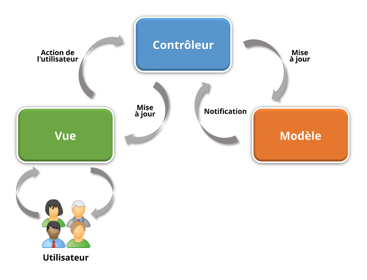

Introduction
Vous savez déjà coder en PHP, HTML et JavaScript. Le problème n’est plus comment coder, mais comment organiser votre code pour qu’il reste propre, maintenable et évolutif.
Le MVC (Model - View - Controller) est un pattern d’architecture qui impose une séparation claire des responsabilités.
Le problème sans MVC
- Mélange PHP + HTML + SQL dans un même fichier
- Code difficile à lire et à modifier
- Effet domino : une petite modification casse tout
Le principe du MVC

- Model : gère les données (logique + base de données)
- View : gère l’affichage (HTML/CSS)
- Controller : reçoit les actions, coordonne Model et View
Cycle de vie d’une requête
1. L'utilisateur envoie une requête (formulaire / URL)
2. Le Controller reçoit la requête
3. Le Controller appelle le Model
4. Le Model traite les données
5. Le Controller envoie les données à la View
6. La View affiche le résultat
Règles d’or
- Pas de HTML dans le Model
- Pas de SQL dans la View
- Le Controller ne doit pas devenir un "fourre-tout"
Objectif du cours : comprendre en construisant, pas en apprenant par cœur.
Projet de base
Dans ce premier projet, l’objectif n’est pas de faire quelque chose de complexe, mais de comprendre concrètement le fonctionnement du MVC.
Nous allons construire une mini application très simple : une gestion de tâches. L’utilisateur pourra ajouter une tâche et voir la liste des tâches affichées.
Ce projet est volontairement simple : pas de base de données, pas de complexité inutile. On se concentre uniquement sur la séparation des rôles entre Model, View et Controller.
Ce que vous allez apprendre
- Comment organiser un projet en dossiers MVC
- Comment faire circuler les données entre Model, Controller et View
- Pourquoi cette séparation rend le code plus propre et maintenable
Structure du projet
Avant d’écrire du code, on commence toujours par organiser les fichiers. Cette étape est essentielle : elle reflète déjà la logique MVC.
project/
│
├── index.php
│
├── config/
│ └── database.php
│
├── controllers/
│ └── TaskController.php
│
├── models/
│ └── Task.php
│
├── views/
│ └── tasks.php
Comprendre require en PHP
Jusqu’à présent, nous écrivions tout le code dans un seul fichier. Dans une architecture MVC, le code est réparti dans plusieurs fichiers.
PHP doit donc "aller chercher" d'autres fichiers pour pouvoir les utiliser. C’est le rôle de require.
---
Pourquoi utiliser require ?
Imaginons que notre classe Task se trouve dans le fichier models/Task.php.
Si nous voulons l'utiliser dans le Controller, PHP ne la connaît pas automatiquement.
require_once "models/Task.php";
Cette instruction permet de charger le fichier et de rendre la classe disponible.
---
require vs require_once
- require : inclut le fichier (peut être inclus plusieurs fois)
- require_once : inclut le fichier une seule fois (recommandé)
Toujours privilégier require_once pour éviter les erreurs de duplication.
---
Exemple concret dans notre projet
Dans le Controller :
require_once "models/Task.php";
Dans le fichier principal (index.php) :
require_once "config/database.php";
require_once "controllers/TaskController.php";
---
Ce qu’il faut retenir
- require permet de charger un fichier
- Sans require, PHP ne connaît pas les classes externes
- require_once évite les erreurs
---
Erreur fréquente
Fatal error: Class 'Task' not found
👉 Cela signifie souvent que le fichier n’a pas été inclus avec require.
Étape 1 : Le Model
Le Model est responsable des données. Pour ce premier projet, nous n'utilisons pas de base de données. Nous allons simplement stocker les tâches dans un tableau.
Le Model ne doit JAMAIS contenir du HTML.
class Task {
private $tasks = [];
public function addTask($task) {
$this->tasks[] = $task;
}
public function getTasks() {
return $this->tasks;
}
}
Étape 2 : Le Controller
Le Controller est le chef d’orchestre. Il reçoit les données de l’utilisateur, appelle le Model, puis envoie les données à la View.
Le Controller fait le lien entre le Model et la View.
require_once "models/Task.php";
class TaskController {
public function handleRequest() {
$model = new Task();
if (isset($_POST['task'])) {
$model->addTask($_POST['task']);
}
$tasks = $model->getTasks();
require "views/tasks.php";
}
}
Étape 3 : La View
La View est responsable de l'affichage. Elle affiche le formulaire et la liste des tâches.
La View ne doit contenir que très peu de logique.
Étape 4 : Le point d'entrée
Le fichier index.php est le point d'entrée de l'application. C’est lui qui lance le Controller.
require_once "controllers/TaskController.php";
$controller = new TaskController();
$controller->handleRequest();
Test de compréhension
- Où se trouve la logique métier ?
- Qui appelle le Model ?
- Qui affiche les données ?
Projet avec BDD
Objectif : stocker les tâches dans une base MySQL avec PDO.
- Connexion PDO
- INSERT / SELECT
- Model connecté à la base
Transition depuis le projet de base
Dans le projet précédent, les tâches étaient stockées dans un simple tableau. Le problème ? Les données disparaissent à chaque rechargement de la page.
Pour rendre notre application réaliste, nous devons stocker les données de manière persistante : dans une base de données.
---
Étape 1 : Création de la base de données
Nous allons créer une base de données simple avec une table tasks.
CREATE DATABASE mvc_tasks;
USE mvc_tasks;
CREATE TABLE tasks (
id INT AUTO_INCREMENT PRIMARY KEY,
title VARCHAR(255) NOT NULL
);
---
Étape 2 : Connexion à la base de données (PDO)
Nous allons créer une connexion à la base de données en utilisant PDO.
PDO permet de sécuriser les requêtes SQL et de travailler proprement avec la base de données.
$pdo = new PDO("mysql:host=localhost;dbname=mvc_tasks", "root", "");
$pdo->setAttribute(PDO::ATTR_ERRMODE, PDO::ERRMODE_EXCEPTION);
---
Étape 3 : Adapter le Model
Le Model ne va plus utiliser un tableau, mais la base de données.
class Task {
private $pdo;
public function __construct($pdo) {
$this->pdo = $pdo;
}
public function addTask($task) {
$stmt = $this->pdo->prepare("INSERT INTO tasks (title) VALUES (?)");
$stmt->execute([$task]);
}
public function getTasks() {
$stmt = $this->pdo->query("SELECT * FROM tasks");
return $stmt->fetchAll(PDO::FETCH_ASSOC);
}
}
---
Étape 4 : Adapter le Controller
Le Controller doit maintenant transmettre la connexion PDO au Model.
require_once "models/Task.php";
class TaskController {
public function handleRequest() {
$pdo = new PDO("mysql:host=localhost;dbname=mvc_tasks", "root", "");
$pdo->setAttribute(PDO::ATTR_ERRMODE, PDO::ERRMODE_EXCEPTION);
$model = new Task($pdo);
if (isset($_POST['task'])) {
$model->addTask($_POST['task']);
}
$tasks = $model->getTasks();
require "views/tasks.php";
}
}
---
Étape 5 : Adapter la View
La View change très peu. La seule différence est que nous recevons maintenant des données provenant de la base.
---
Test de compréhension
- Pourquoi utilise-t-on PDO au lieu de mysqli ?
- Pourquoi le Model reçoit-il la connexion en paramètre ?
- Que se passe-t-il si la base de données est vide ?
Projet avec routeur
Transition depuis le projet avec BDD
Jusqu’à présent, notre application fonctionne avec un seul point d’entrée et un seul comportement. Mais dans une vraie application, nous avons plusieurs actions : afficher, ajouter, supprimer, etc.
Un routeur permet de diriger les requêtes vers le bon traitement en fonction de l’URL.
---
Objectif
Créer un système simple qui permet de gérer différentes actions :
/index.php?action=list
/index.php?action=add
---
Étape 1 : Comprendre le principe
Nous allons utiliser un paramètre action dans l’URL pour décider quoi faire.
Le routeur analyse la requête et appelle la bonne méthode du Controller.
---
Étape 2 : Modifier le Controller
Le Controller va maintenant gérer plusieurs actions.
class TaskController {
private $model;
public function __construct($pdo) {
$this->model = new Task($pdo);
}
public function handleRequest() {
$action = $_GET['action'] ?? 'list';
switch ($action) {
case 'add':
if (isset($_POST['task'])) {
$this->model->addTask($_POST['task']);
}
header("Location: index.php?action=list");
break;
case 'list':
default:
$tasks = $this->model->getTasks();
require "views/tasks.php";
break;
}
}
}
---
Étape 3 : Adapter le point d’entrée (index.php)
Le fichier principal devient responsable du routage.
require_once "models/Task.php";
require_once "controllers/TaskController.php";
$pdo = new PDO("mysql:host=localhost;dbname=mvc_tasks", "root", "");
$pdo->setAttribute(PDO::ATTR_ERRMODE, PDO::ERRMODE_EXCEPTION);
$controller = new TaskController($pdo);
$controller->handleRequest();
---
Étape 4 : Adapter la View
Le formulaire doit maintenant envoyer vers l’action add.
---
Ce que vous devez comprendre
- Le routeur décide quelle action exécuter
- Le Controller peut gérer plusieurs comportements
- L’URL devient une interface de contrôle de l’application
---
Test de compréhension
- Que se passe-t-il si aucune action n’est fournie ?
- Pourquoi redirige-t-on après un ajout ?
- Où se trouve la logique de routage ?
Examen MVC : Gestion de contacts
Objectif
Réaliser une application web en PHP MVC permettant de gérer une liste de contacts.
Ce projet doit respecter l’architecture MVC étudiée en cours : séparation claire entre Model, View et Controller.
---
Fonctionnalités demandées
- Afficher les contacts (nom + email)
- Ajouter un contact via un formulaire
- Supprimer un contact
---
Base de données
CREATE DATABASE mvc_contacts;
USE mvc_contacts;
CREATE TABLE contacts (
id INT AUTO_INCREMENT PRIMARY KEY,
name VARCHAR(100),
email VARCHAR(100)
);
---
Structure imposée
project/
├── index.php
├── config/
│ └── database.php
├── controllers/
│ └── ContactController.php
├── models/
│ └── Contact.php
├── views/
│ └── contacts.php
---
Contraintes importantes
- Respect du pattern MVC
- Utilisation de PDO
- Utilisation de require_once
- Utilisation d’un routeur avec action
---
Indications techniques
Routeur attendu :
$action = $_GET['action'] ?? 'list';
Actions à gérer :
---
Travail à rendre
- Projet fonctionnel
- Code organisé
- Application testable
---
Barème (sur 20)
- Structure MVC respectée : 4 pts
- Connexion PDO : 3 pts
- Affichage des contacts : 3 pts
- Ajout de contact : 4 pts
- Suppression de contact : 3 pts
- Qualité du code : 3 pts
---
Bonus (facultatif)
- Validation du formulaire
- Amélioration du design
- Message de confirmation
+2 points
---
Conseil
Commencez par afficher quelque chose, puis ajoutez les fonctionnalités progressivement.